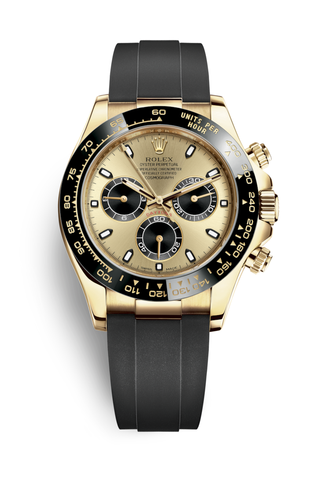

"Характеристика модели"
18-каратное золото
Наличие собственного литейного производства позволяет Rolex изготавливать 18‑каратные золотые сплавы высочайшего качества. Добавлением серебра, латуни, платины или палладия в определенных пропорциях получают 18‑каратное золото разных видов – желтое, розовое или белое. Золотой сплав, полученный из металлов без примесей, проходит тщательный контроль качества в собственной лаборатории компании, оснащенной ультрасовременным оборудованием. После этого из него изготавливаются требуемые детали, и также с непременным вниманием к качеству. Стремление Rolex к совершенству берет начало у самых истоков.
Циферблат цвета шампанского и черного цвета
В то время как плавная центральная секундная стрелка отмеряет время с точностью 1/8 секунды, счетчики отображают часы и минуты истекшего времени. Благодаря этому автогонщики могут точно контролировать прохождение каждого отрезка трассы.
Браслет Oysterflex
Новые часы Cosmograph Daytona предлагаются с браслетом Oysterflex, разработанным и запатентованным компанией Rolex. Такое редкое сочетание свойств объясняется тем, что сердцевина браслета представляет собой сверхэластичную металлическую пластину, покрытую высокотехнологичным эластомером черного цвета. Этот материал обладает повышенной устойчивостью к внешним воздействиям и высокой прочностью. Браслет Oysterflex также оснащен застежкой безопасности Oysterlock и дополнительным звеном Easylink для быстрого увеличения длины. Эта хитроумная система, запатентованная Rolex, позволяет удлинить браслет примерно на 5 мм, делая часы более удобными при ношении в любых обстоятельствах.
Механизм 34130
В модели Cosmograph Daytona установлен калибр 4130 с автоматическим подзаводом, полностью разработанный и изготовленный мастерами Rolex. Этот механизм насчитывает существенно меньше элементов, чем у обычного хронографа, что положительно сказывается на его надежности. Как все механизмы Rolex Perpetual, калибр 4130 имеет сертификат швейцарского хронометра, выдаваемый сверхточным часам, успешно прошедшим тестирование в Официальном швейцарском институте хронометрии (COSC). Он оснащен спиралью Parachrom, обеспечивающей более надежную защиту от сотрясений и температурных изменений.
"Полное описание модели"
Представленные в 1963 году часы Rolex Cosmograph Daytona созданы для профессиональных автогонщиков. Благодаря безелю тахиметрической шкалой этот надежный хронограф идеально подходит для измерения скорости в пределах до 400 единиц в час, будь то километры, мили или иные меры длины. Название и функции этих легендарных часов однозначно указывают на их принадлежность к миру автомотоспора.
|